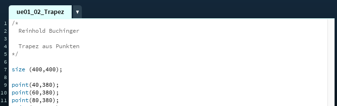

Kommentare
Softwareentwicklung 1
Kommentare
- Der*Die Programmierer*in nutzt Kommentare um Erklärungen/Hinweise zum Quellcode hinzuzufügen.
- Kommentare werden vom Compiler/Interpreter ignoriert.
Einzeilige Kommentare
// leitet ein einzeiliges Kommentar ein.
//linkes Auge
ellipse(50,50,30,30); //Pupille
ellipse(50,50,10,10); //Auge
Mehrzeilige Kommentare
Kommentare über (möglicherweiße) mehrere Zeilen beginnen mit /* und enden mit */
/*
Beispiel für
ein mehrzeiliges
Kommentar.
*/
Warum kommentieren?
- Damit der*die Programmier*in den Quellcode besser versteht wenn er*sie ihn sich nach einiger Zeit wieder ansehen.
- Damit (Team-) Kollegen*Kolleginnen den Quellcode einfacher verstehen.
- Um Codeteile temporär nicht auszuführen.
Was kommentieren?
- Allgemeine Informationen zum Quelltext hinzufügen (z.B. Übersicht was der Quellcode macht)
- Quelltext gliedern
- Hinweise auf noch zu erledigende Arbeit ("
/* TODO: ... */")
- Erläuterung einzelner Codezeilen
Selbsterklärender Code
Code sollte sich möglichst weit selbst erklären! (z.B. durch sinnvolle Variablennamen!)
😒 int x= 10; //Mittelpunkt des Kreises
🤗 int xCircle= 10;
Unnötige Kommentare
Kommentare sollen den Code nicht wiederholen
😒 int alterJon = 10; //Alter von Jon ist 10
Sinnvolle Kommentare
Erkläre warum du etwas machst (nicht was du machst)
ellipse(20,10,40,40); //linkes Auge
Kommentare in den Übungen
- Ab sofort sollen Kommentare in den Übungen verwendet werden!
- Als Anfänger*in kannst du ruhig mehr kommentieren.
- Kommentiere so, dass du in drei Monaten deinen Sourcecode noch verstehst.
Kommentare in den Übungen
Füge zu Beginn jeder Aufgabe ein Kommentar mit deinem vollen Namen und einer kurzen Beschreibung des Programms ein.

Fragen?
Wünsche?
Beschwerden?
Anregungen?